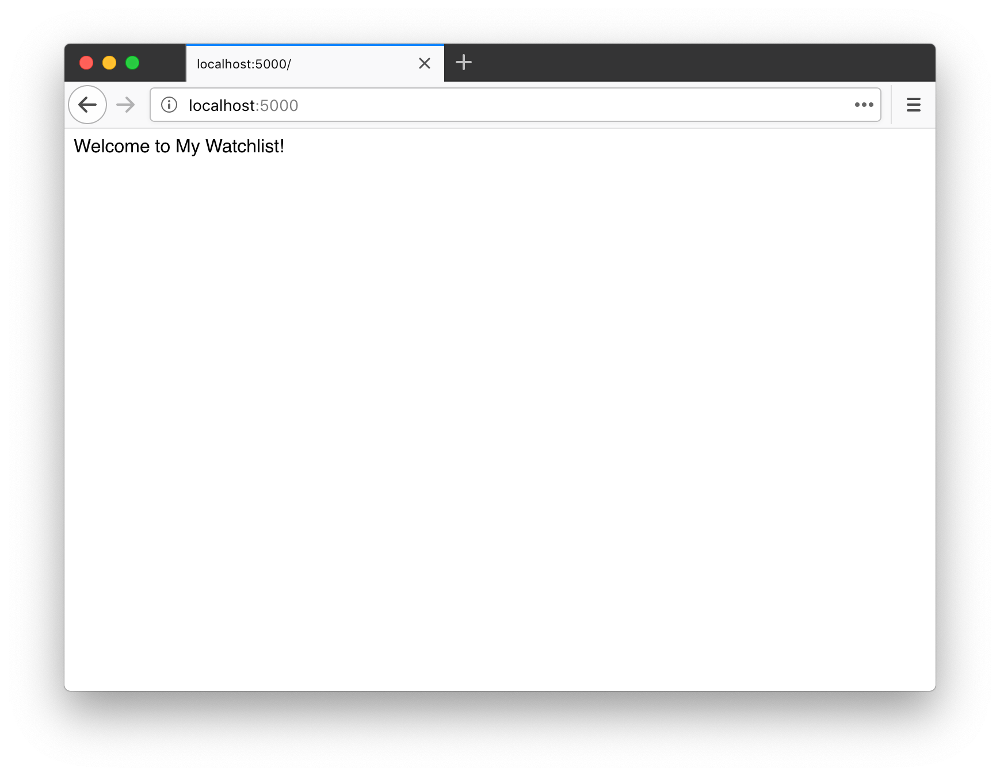
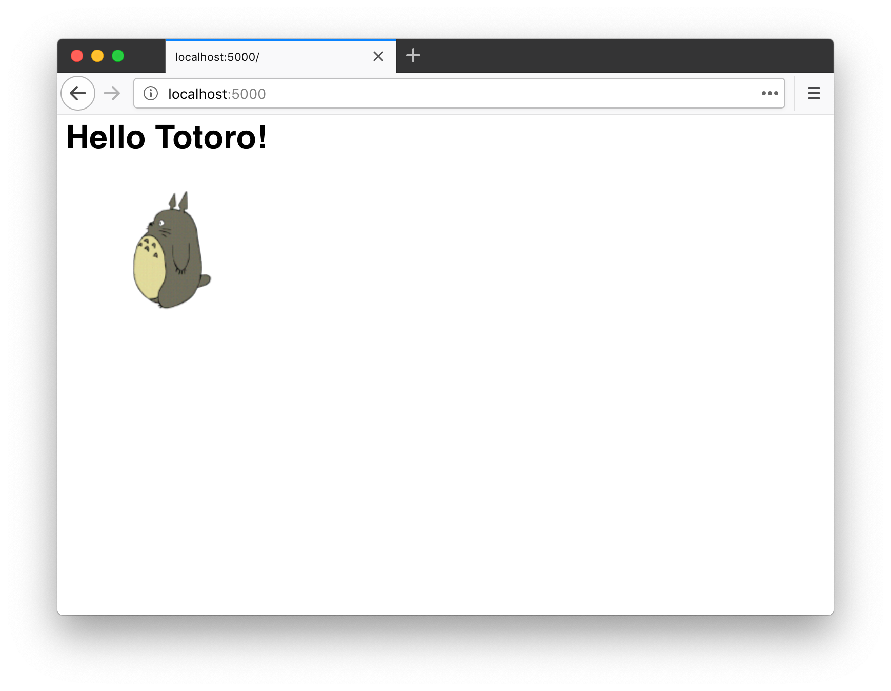

第 2 章：Hello, Flask!¶
追溯到最初，Flask 诞生于 Armin Ronacher 在 2010 年愚人节开的一个玩笑。后来，它逐渐发展成为一个成熟的 Python Web 框架，越来越受到开发者的喜爱。目前它在 GitHub 上是 Star 数量最多的 Python Web 框架，没有之一。根据 2018、2019、2020、2021 连续四年的《Python 开发者调查报告》统计数据，它也是目前最流行的 Python Web 框架。
Flask 是典型的微框架，作为 Web 框架来说，它仅保留了核心功能：请求响应处理和模板渲染。这两类功能分别由 Werkzeug（WSGI 工具库）完成和 Jinja（模板渲染库）完成，因为 Flask 包装了这两个依赖，我们暂时不用深入了解它们。
主页¶
这一章的主要任务就是为我们的程序编写一个简单的主页。主页的 URL 一般就是根地址，即 /。当用户访问根地址的时候，我们需要返回一行欢迎文字。这个任务只需要下面几行代码就可以完成：
app.py：程序主页
from flask import Flask
app = Flask(__name__)
@app.route('/')
def hello():
return 'Welcome to My Watchlist!'
按照惯例，我们把程序保存为 app.py，确保当前目录是项目的根目录，并且激活了虚拟环境，然后在命令行窗口执行 flask run 命令启动程序（按下 Control + C 可以退出）：
(env) $ flask run
* Serving Flask app "app.py"
* Environment: production
WARNING: Do not use the development server in a production environment.
Use a production WSGI server instead.
* Debug mode: off
* Running on http://127.0.0.1:5000/ (Press CTRL+C to quit)
现在打开浏览器，输入 http://localhost:5000 并按下 Enter 即可访问我们的程序主页，并看到我们在程序里返回的问候语，如下图所示：

执行 flask run 命令时，Flask 会使用内置的开发服务器来运行程序。这个服务器默认监听本地机的 5000 端口，也就是说，我们可以通过在地址栏输入 http://127.0.0.1:5000 或是 http://localhost:5000 访问程序。
注意 内置的开发服务器只能用于开发时使用，部署上线的时候要换用性能更好的生产服务器，我们会在最后一章学习。
解剖时间¶
下面我们来分解这个 Flask 程序，了解它的基本构成。
首先我们从 flask 包导入 Flask 类，通过实例化这个类，创建一个程序对象 app：
from flask import Flask
app = Flask(__name__)
接下来，我们要注册一个处理函数，这个函数是处理某个请求的处理函数，Flask 官方把它叫做视图函数（view funciton），你可以理解为“请求处理函数”。
所谓的“注册”，就是给这个函数戴上一个装饰器帽子。我们使用 app.route() 装饰器来为这个函数绑定对应的 URL，当用户在浏览器访问这个 URL 的时候，就会触发这个函数，获取返回值，并把返回值显示到浏览器窗口：
@app.route('/')
def hello():
return 'Welcome to My Watchlist!'
提示 为了便于理解，你可以把 Web 程序看作是一堆这样的视图函数的集合：编写不同的函数处理对应 URL 的请求。
填入 app.route() 装饰器的第一个参数是 URL 规则字符串，这里的 /指的是根地址。
我们只需要写出相对地址，主机地址、端口号等都不需要写出。所以说，这里的 / 对应的是主机名后面的路径部分，完整 URL 就是 http://localhost:5000/。如果我们这里定义的 URL 规则是 /hello，那么完整 URL 就是 http://localhost:5000/hello。
整个请求的处理过程如下所示：
- 当用户在浏览器地址栏访问这个地址，在这里即 http://localhost:5000/
- 服务器解析请求，发现请求 URL 匹配的 URL 规则是
/，因此调用对应的处理函数hello() - 获取
hello()函数的返回值，处理后返回给客户端（浏览器） - 浏览器接受响应，将其显示在窗口上
提示 在 Web 程序的语境下，虽然客户端可能有多种类型，但在本书里通常是指浏览器。
程序发现机制¶
如果你把上面的程序保存成其他的名字，比如 hello.py，接着执行 flask run 命令会返回一个错误提示。这是因为 Flask 默认会假设你把程序存储在名为 app.py 或 wsgi.py 的文件中。如果你使用了其他名称，就要设置系统环境变量 FLASK_APP 来告诉 Flask 你要启动哪个程序：
$ export FLASK_APP=hello.py
在 Windows CMD 中使用 set 命令：
> set FLASK_APP=hello.py
在 Windows PowerShell 中则使用下面的命令：
> $env:FLASK_APP = "hello.py"
Flask 通过读取这个环境变量值对应的模块寻找要运行的程序实例，你可以把它设置成下面这些值：
- 模块名
- Python 导入路径
- 文件目录路径
管理环境变量¶
现在在启动 Flask 程序的时候，我们通常要和两个环境变量打交道：FLASK_APP 和 FLASK_DEBUG。因为我们的程序现在的名字是 app.py，暂时不需要设置 FLASK_APP。FLASK_DEBUG 用来开启调试模式（debug mode）。调试模式开启后，当程序出错，浏览器页面上会显示错误信息；代码出现变动后，程序会自动重载。
下面是手动设置环境变量 FLASK_DEBUG 来开启调试模式的示例：
(env) $ export FLASK_DEBUG=1 # 注意在 Windows 系统使用 set 或 $env: 替代 export，参考前面的示例
(env) $ flask run
为了不用每次打开新的终端会话都要设置环境变量，我们安装用来自动导入系统环境变量的 python-dotenv：
(env) $ pip install python-dotenv
当 python-dotenv 安装后，Flask 会从项目根目录的 .flaskenv 和 .env 文件读取环境变量并设置。我们分别使用文本编辑器创建这两个文件，或是使用更方便的 touch 命令创建（注意不要漏掉文件名开头的点）：
$ touch .env .flaskenv
.flaskenv 用来存储 Flask 命令行系统相关的公开环境变量；而 .env 则用来存储敏感数据，不应该提交进 Git 仓库，我们把文件名 .env 添加到 .gitignore 文件的结尾（新建一行）来让 Git 忽略它。你可以使用编辑器打开这个文件，然后添加下面这一行内容：
.env
在新创建的 .flaskenv 文件里，我们写入一行 FLASK_DEBUG=1，将环境变量 FLASK_DEBUG 的值设为 1，以便开启调试模式：
# .flaskenv 文件
FLASK_DEBUG=1
顺便说一句，如果你安装的 Flask 版本是 2.3 或更高版本，则可以直接使用 --debug 命令行选项来开启调试模式，即：
(env) $ flask run --debug
实验时间¶
在这个小节，我们可以通过做一些实验，来扩展和加深对本节内容的理解。
修改视图函数返回值¶
首先，你可以自由修改视图函数的返回值，比如：
@app.route('/')
def hello():
return '欢迎来到我的 Watchlist！'
返回值作为响应的主体，默认会被浏览器作为 HTML 格式解析，所以我们可以添加一个 HTML 元素标记：
@app.route('/')
def hello():
return '<h1>Hello Totoro!</h1><img src="http://helloflask.com/totoro.gif">'
保存修改后，只需要在浏览器里刷新页面，你就会看到页面上的内容也会随之变化。

修改 URL 规则¶
另外，你也可以自由修改传入 app.route 装饰器里的 URL 规则字符串，但要注意以斜线 / 作为开头。比如：
@app.route('/home')
def hello():
return 'Welcome to My Watchlist!'
保存修改，这时刷新浏览器，则会看到一个 404 错误提示，提示页面未找到（Page Not Found）。这是因为视图函数的 URL 改成了 /home，而我们刷新后访问的地址仍然是旧的 /。如果我们把访问地址改成 http://localhost:5000/home，就会正确看到返回值。
一个视图函数也可以绑定多个 URL，这通过附加多个装饰器实现，比如：
@app.route('/')
@app.route('/index')
@app.route('/home')
def hello():
return 'Welcome to My Watchlist!'
现在无论是访问 http://localhost:5000/、http://localhost:5000/home 还是 http://localhost:5000/index 都可以看到返回值。
在前面，我们之所以把传入 app.route 装饰器的参数称为 URL 规则，是因为我们也可以在 URL 里定义变量部分。比如下面这个视图函数会处理所有类似 /user/<name> 的请求：
@app.route('/user/<name>')
def user_page(name):
return 'User page'
不论你访问 http://localhost:5000/user/greyli，还是 http://localhost:5000/user/peter，抑或是 http://localhost:5000/user/甲，都会触发这个函数。通过下面的方式，我们也可以在视图函数里获取到这个变量值：
from markupsafe import escape
@app.route('/user/<name>')
def user_page(name):
return f'User: {escape(name)}'
注意 用户输入的数据会包含恶意代码，所以不能直接作为响应返回，需要使用 MarkupSafe（Flask 的依赖之一）提供的
escape()函数对name变量进行转义处理，比如把<转换成<。这样在返回响应时浏览器就不会把它们当做代码执行。
修改视图函数名？¶
最后一个可以修改的部分就是视图函数的名称了。首先，视图函数的名字是自由定义的，和 URL 规则无关。和定义其他函数或变量一样，只需要让它表达出所要处理页面的含义即可。
除此之外，它还有一个重要的作用：作为代表某个路由的端点（endpoint），同时用来生成视图函数对应的 URL。对于程序内的 URL，为了避免手写，Flask 提供了一个 url_for 函数来生成 URL，它接受的第一个参数就是端点值，默认为视图函数的名称：
from flask import url_for
from markupsafe import escape
# ...
@app.route('/')
def hello():
return 'Hello'
@app.route('/user/<name>')
def user_page(name):
return f'User: {escape(name)}'
@app.route('/test')
def test_url_for():
# 下面是一些调用示例（请访问 http://localhost:5000/test 后在命令行窗口查看输出的 URL）：
print(url_for('hello')) # 生成 hello 视图函数对应的 URL，将会输出：/
# 注意下面两个调用是如何生成包含 URL 变量的 URL 的
print(url_for('user_page', name='greyli')) # 输出：/user/greyli
print(url_for('user_page', name='peter')) # 输出：/user/peter
print(url_for('test_url_for')) # 输出：/test
# 下面这个调用传入了多余的关键字参数，它们会被作为查询字符串附加到 URL 后面。
print(url_for('test_url_for', num=2)) # 输出：/test?num=2
return 'Test page'
实验过程中编写的代码可以删掉，也可以保留，但记得为根地址返回一行问候，这是我们这一章的任务。
本章小结¶
这一章我们为程序编写了主页，同时学习了 Flask 视图函数的基本编写方式。结束前，让我们提交代码：
$ git add .
$ git commit -m "Add minimal home page"
$ git push
为了保持简单，我们统一在章节最后一次提交所有改动。在现实世界里，通常会根据需要分为多个 commit；同样的，这里使用 -m 参数给出简单的提交信息。在现实世界里，你可能需要撰写更完整的提交信息。
提示 你可以在 GitHub 上查看本书示例程序的对应 commit：eca06dc。
进阶提示¶
- 对于 URL 变量，Flask 支持在 URL 规则字符串里对变量设置处理器，对变量进行预处理。比如
/user/<int:number>会将 URL 中的 number 部分转换成整型。 - 因为 Flask 的上下文机制，有一些变量和函数（比如
url_for函数）只能在特定的情况下才能正确执行，比如视图函数内。我们先暂时不用纠结，后面再慢慢了解。 - 名字以
.开头的文件默认会被隐藏，执行ls命令时会看不到它们，这时你可以使用ls -f命令来列出所有文件。 - 了解 HTTP 基本知识将会有助于你了解 Flask 的工作原理。
- 如果你是《Flask Web 开发实战》的读者，这部分的进阶内容可以在第 1 章《初识 Flask》和第 2 章《HTTP 和 Flask》找到。